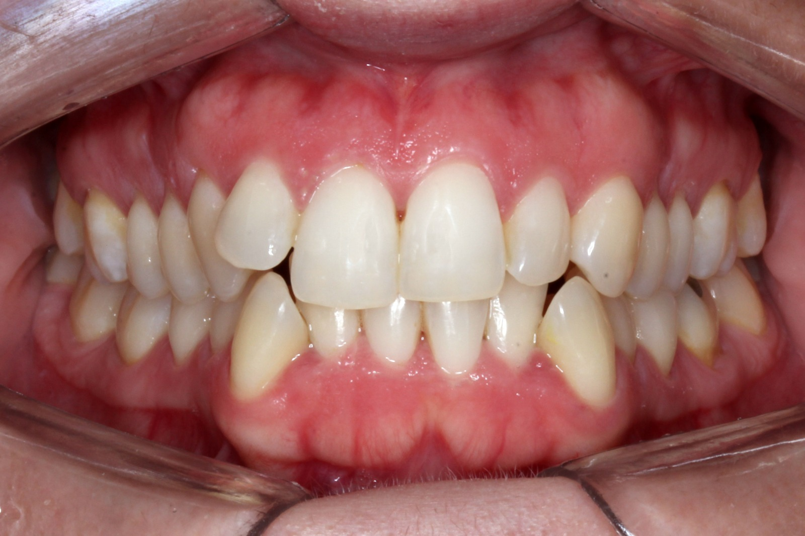
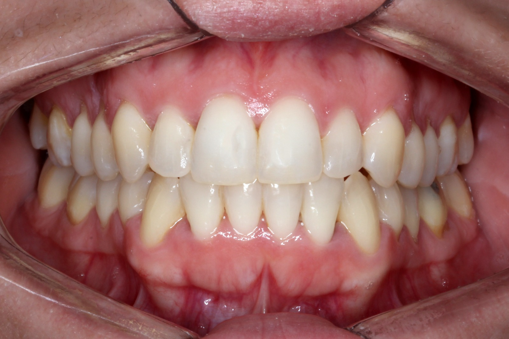

★★★★★
"Tenía miedo de arrancar pero fue la mejor decisión de mi vida. En 8 meses mi sonrisa cambió completamente. El equipo es súper profesional y te acompañan en todo el proceso."
Alineadores dentales cómodos y removibles en Palermo, CABA. Tratamiento de ortodoncia invisible personalizado con tecnología de escaneo 3D.
Respondemos en menos de 1 hora

Cada sonrisa es única. Mirá lo que lograron nuestros pacientes.






Cada caso es único. Los resultados dependen de la complejidad del tratamiento.
Un proceso claro, personalizado y con acompañamiento profesional en cada etapa.
Visitás el consultorio para un diagnóstico completo con escaneo digital 3D. Te vas con un plan de tratamiento y presupuesto.
Nuestros ortodoncistas diseñan tu tratamiento a medida. Ves una simulación de tu resultado final antes de empezar.
Te colocamos los alineadores KeepSmiling en el consultorio. Te explicamos cómo usarlos y te damos todas las indicaciones.
Con controles regulares, seguimos tu progreso hasta lograr el resultado perfecto.
No hacemos brackets, no hacemos de todo. Nos especializamos 100% en alineadores. Eso nos hace mejores.
Trabajamos con la marca líder argentina en alineadores, con más de 17 años de innovación.
Tenés atención profesional con ortodoncistas que solo hacen esto, todos los días.
Ubicación céntrica y accesible, a metros del subte línea D, estación Scalabrini Ortiz.
No te dejamos solo. Controles regulares y contacto directo por WhatsApp con tu ortodoncista.
Opciones de financiación para que puedas arrancar tu tratamiento sin estrés.
Respondé 5 preguntas rápidas y descubrí si los alineadores son para vos. Tarda menos de 30 segundos.
La mayoría de los casos se pueden tratar con alineadores. El siguiente paso es una evaluación inicial con nuestros ortodoncistas donde te confirmamos el diagnóstico con escaneo 3D.
Reservá tu evaluación inicial →Evaluación con diagnóstico 3D · Sin compromiso
Historias reales de personas que eligieron transformar su sonrisa con nosotros.
"Tenía miedo de arrancar pero fue la mejor decisión de mi vida. En 8 meses mi sonrisa cambió completamente. El equipo es súper profesional y te acompañan en todo el proceso."
"Trabajo en contacto con gente todo el día y necesitaba algo discreto. Los alineadores son prácticamente invisibles y super cómodos. Nadie se da cuenta."
"Consulté en varios lugares y acá me sentí más confiada desde la primera visita. Me explicaron todo clarito y el resultado superó mis expectativas."
"Siempre quise arreglarme los dientes pero no quería brackets. Con los alineadores fue todo mucho más fácil de lo que pensaba. Lo recomiendo total."

Ortodoncista — Esp. en alineadores

Ortodoncista — Esp. en alineadores

Ortodoncista — Esp. en alineadores

Ortodoncista — Esp. en alineadores
Todos nuestros profesionales son ortodoncistas matriculados con formación específica en tratamiento con alineadores.
Trabajamos exclusivamente con KeepSmiling, la empresa argentina líder en alineadores invisibles con más de 17 años en el mercado y más de 50.000 sonrisas transformadas.
Diseño y fabricación 100% argentina
+17 años de innovación en ortodoncia
Tecnología de escaneo y planificación 3D
Respaldo científico y profesional
Av. Scalabrini Ortiz 3183, Palermo, CABA
Subte línea D, estación Scalabrini Ortiz (a 3 cuadras)
Sacá turno para tu evaluación inicial y empezá el cambio
Reservá tu turno →Respondemos en menos de 1 hora · Lunes a Viernes